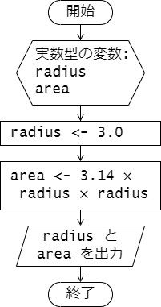

第 1 章 : 序論
1.3 コンピュータに仕事をさせるための手順
例題 1-1 : プログラムの作成・コンパイル・実行
C 言語でプログラムを作成してコンパイルを行って実行コードを生成し、実行するまでの手順を体験してみましょう。
初めにソースコードを作成します。エディタ(Emacs, Vim, VSCode など)で、次のプログラムを作成を作成し、ファイル名を first.c として保存します。
なお、 C 言語のソースコードのファイル(ソースファイル)の拡張子は .c とする必要があります。
first.c
#include <stdio.h>
int main(void) {
printf("This is my first C program!\n");
return 0;
}
次に端末を開き、 gcc コマンドでソースファイルを指定してコンパイルを行います。コンパイルを行ってできる実行コードのファイル名は gcc コマンドの -o オプションで指定しましょう。
次のようにソースファイル first.c をコンパイルすると、プログラムに構文エラー(Syntax error)がなければ、実行コード first が作成されます。
terminal
$ gcc first.c -o first
$ ls
first first.c
実行コード first を実行します。
プログラムに誤りがなければ、標準出力に This is my first C program! と表示され、改行されます。
terminal
$ ./first
This is my first C program!
$
tips ソースコードに構文エラー(文法上の誤り)があると、コンパイラはコンパイルに失敗し、次のようなエラーメッセージやヒントを表示します。 エラーメッセージをよく確認し、ソースコードを修正したうえで再度コンパイルを行いましょう。
terminal
$ gcc first.c -o first
first.c: In function ‘main’:
first.c:4:42: error: expected ‘;’ before ‘return’
4 | printf("This is my first C program!\n")
| ^
| ;
5 |
6 | return 0;
| ~~~~~~
例題 1-2 : コンパイルとリンク
gcc にはコンパイラとリンカの両方の機能が備わっています。
プログラミング基礎で扱うような小規模なプログラムの開発では、
例題 1-1 で行ったように gcc でソースコードから直接実行コードを作成しても問題ありませんが、複数のソースコードを必要とする大規模な開発では、コンパイルとリンクを分けて行うことが多いです。
参考のために、コンパイルとリンクを分けて実行コードを作成する方法を体験しておきましょう。
まず、次のソースコードを作成し、second.c とファイル名を付けて保存しましょう。
second.c
#include <stdio.h>
int main(void) {
printf("Second program!\n");
return 0;
}
次にソースコードをコンパイルしオブジェクトコードを作成します。
gcc の -c オプションを用います。
次のようにコンパイルを行うと、オブジェクトコードのファイル second.o が作成されます。
terminal
$ gcc -c second.c
$ ls
second.c second.o
最後に、リンカを用いて、オブジェクトコードから実行コードを作成します。
リンカは複数のオブジェクトコードやライブラリを結合して、コンピュータ上で直接実行できる実行コードを作成するものです。
リンクは gcc の -o オプションで、実行コードのファイル名と、リンク対象のオブジェクトコードを指定して行います。
terminal
$ gcc -o second second.o
$ ls
second second.c second.o
実行コード second を実行すると、標準出力に Second program! と表示され改行されます。
terminal
$ ./second
Second program!
$
tips 実行コードやオブジェクトコードはコンピュータが解釈できる 0, 1 の2進数でされる機械語で書かれたプログラム(およびデータ)となっています。 (通常の)人間が読んでわかるものではありませんが、
xxdコマンドやodコマンドを使って、次のように実行コードの中身を見ることはできます。
terminal
$ xxd -b second | less
00000000: 01111111 01000101 01001100 01000110 00000010 00000001 .ELF..
00000006: 00000001 00000000 00000000 00000000 00000000 00000000 ......
0000000c: 00000000 00000000 00000000 00000000 00000011 00000000 ......
00000012: 00111110 00000000 00000001 00000000 00000000 00000000 >.....
00000018: 01100000 00010000 00000000 00000000 00000000 00000000 `.....
0000001e: 00000000 00000000 01000000 00000000 00000000 00000000 ..@...
00000024: 00000000 00000000 00000000 00000000 10011000 00110110 .....6
(以下略 q で表示終了)
演習
演習 1-1
以下のソースコードをコンパイルし、実行してプログラムの動作を確認してください。
count10.c
// IS2 99 愛子花子
#include <stdio.h>
int main(void) {
int count;
for (count = 1; count <= 10; count++) {
printf("%d ", count);
}
printf("end!\n");
return 0;
}
プログラムの実行結果については、次のように script コマンドを用いて、
ターミナルへの入出力をファイル count10.log に保存してください。
terminal
$ script count10.log
$ ./count10
1 2 3 4 5 6 7 8 9 10 end!
$ exit
第 2 章 : C 言語の基礎
2.4 C 言語によるプログラミング
例題 2-1 : Hello, World!
次のプログラムは、標準出力 (ターミナル) へ Hello, World! と表示するプログラムです。
ソースコード中の // は単一行コメントの開始を表す記号で、// から右側行末まではコメントとして扱われます。コンパイラはコメント部分は無視してコンパイルを行います。
プログラムを作成し、コンパイルを行って実行してみましょう。
hello.c
#include <stdio.h> // (1)
int main(void) { // (2-1)
printf("Hello, World!\n"); //(3)
return 0; // (4)
} // (2-2)
hello.c の各部分について説明します。
#include <stdio.h> // (1)
#include はプリプロセッサディレクティブと呼ばれるもののひとつで、指定したファイルをソースコードに組み込むときに使用します。
ここでは、 stdio.h というファイル(ヘッダファイル)が指定されています。
stdio.h はシステムで提供されている標準入出力を処理する関数を宣言しています。
int main(void) { // (2-1)
...(中略)
} // (2-2)
C 言語で作成したプログラムは、実行すると(通常)はじめに main 関数が呼び出されます。
ここではその main 関数を定義しています。
関数の定義ではまず、関数名と関数に渡す値(引数)の型、関数が返す値(返り値)の型を指定します。
このプログラムでは、関数名として main 、引数の型として void 型(空であること示す型)、返り値の型として int 型(整数型)が指定されています。
なお、main 関数の返り値の方は int 型となります。
(main 関数に引数を渡すこともできますが、詳細は 10 章で説明します。)
関数の本体で行う処理を { と } で囲まれた部分に記述します。
printf("Hello, World!\n"); //(3)
printf は引数で指定した文字列を標準出力へ出力する命令です。
引数で渡された " (ダブルクォート)で囲まれた文字列を出力します。
なお、文字列中の \n は改行文字を表し、出力時はこの部分で改行が行われます。
return 0; // (4)
return 文は関数(ここでは main 関数)の実行を終了し、関数の呼び出し元に返す値を設定する命令です。
main 関数は正常に終了すると整数値 0 を返します。
このプログラムをコンパイルし、実行すると次のように Hello, World! と表示し改行されます。
terminal
$ gcc hello.c -o hello
$ ./hello
Hello, world!
$
tips
manコマンドを使うとシステムで提供されている C 言語の関数や、ファイルなどに関する情報が得られます。stdioやprintfなどについてmanコマンドを使って調べてみましょう。
terminal
$ man stdio
STDIO(3) Linux Programmer's Manual STDIO(3)
NAME
stdio - standard input/output library functions
SYNOPSIS
#include <stdio.h>
FILE *stdin;
FILE *stdout;
FILE *stderr;
DESCRIPTION
The standard I/O library provides a simple and effi‐
cient buffered stream I/O interface. (以下略)
演習
演習 2-1
次のプログラムの <your name> の部分を自分の名前に変更したプログラムを作成し、コンパイルし実行して、その動作を確認しましょう。
name.c
// IS 99 愛子花子
#include <stdio.h>
int main(void) {
printf("Hi, ");
printf("<your name>");
printf("!\nHow are you?\n");
return 0;
}
演習 2-2
次のプログラムを作成し、実行してみましょう。
fizzbuzz.c
#include <stdio.h>
#define MAX_COUNT 42
int main(void) {
int count = 1;
while (count <= MAX_COUNT) {
if (count % 15 == 0) {
printf("FizzBuzz\n");
} else if (count % 3 == 0) {
printf("Fizz\n");
} else if (count % 5 == 0) {
printf("Buzz\n");
} else {
printf("%d\n", count);
}
count = count + 1;
}
return 0;
}
第 3 章 : 変数とデータ型
例題 3-1 : 変数の宣言と値の代入
次のプログラムは変数を用いたデモプログラムです。
variables1.c
#include <stdio.h>
int main(void) {
// (1) 変数の宣言
char character;
int i, num;
double temperature;
// (2) 変数への値の代入
character = 'z';
i = 42;
num = i + 10;
temperature = -3.4;
// (3) 変数の値の表示
printf("%c\n", character);
printf("%d\n", i);
printf("%d\n", num);
printf("%f\n", temperature);
return 0;
}
プログラムの説明をしていきます。
変数を用いる際には、まず変数の型(データ型)と変数名を示して宣言する必要があります。
// (1) 変数の宣言
char character;
int i, num;
double temperature;
これにより、 char 型の変数 character と、int 型の変数 i および num、
double 型の変数 temperature が使えるようになりました。
なお、変数を宣言しただけではその変数の値は不定となります。
変数へ値を代入するときは代入演算子 = を使います。
// (2) 変数への値の代入
character = 'z';
i = 42;
num = i + 10;
temperature = -3.4;
代入演算子 = の左辺には、代入先となる変数を置き、
右辺には代入する値を持ってきます。
character = 'z'; が実行されると、char 型の変数 character に 1 文字の値 'z' が代入されます。
同様に i = 42; が実行されると、int 型の変数 i に整数 42 が代入されます。
代入演算子の右辺に式を持ってくることもできます。
num = i + 10; が実行されると右辺が計算され、その計算結果である 52 が int 型の変数 num に代入されます。
(今、 i の値が 42 であったことに注意)
変数の値を表示するには printf を用いるとよいです。
printf 関数の詳しい使い方については 4 章で説明します。
// (3) 変数の値の表示
printf("%c\n", character);
printf("%d\n", i);
printf("%d\n", num);
printf("%f\n", temperature);
プログラムの実行結果を示します。
terminal
z
42
52
-3.400000
例題 3-2 : 変数の宣言時の初期化
変数の宣言時と同時に変数の値を代入することもできます。 これを変数の初期化といいます。 変数の初期値が決まっている変数に対しては、変数の初期化を行うとよいでしょう。
変数の初期化を用いたプログラムを示します。
variables2.c
#include <stdio.h>
int main(void) {
// 変数の宣言時に値を設定
char character = 'P';
int num = -57;
double temperature = 12.34;
printf("%c\n", character);
printf("%d\n", num);
printf("%f\n", temperature);
return 0;
}
プログラムの実行結果を示します。
terminal
P
-57
12.340000
例題 3-3 : 代入による変数の上書き
変数への代入は 1 度だけでなく複数回行うことができます。
次のプログラムでは、int 型の変数 i と j に対して、
変数宣言時に初期化を行った後、
それぞれの変数に対して 2 回代入を行っています。
初期化、1 回目の代入、2 回目の代入それぞれが行われた直後で
変数 i と j の値がどのように変化しているか、
プログラムを実行して確かめてください。
variables3.c
#include <stdio.h>
int main(void) {
// (1) 初期化
int i = 10;
int j = 20;
printf("(1)\n");
printf("i = %d\n", i);
printf("j = %d\n", j);
// (2) 代入
i = 30;
j = i;
printf("(2)\n");
printf("i = %d\n", i);
printf("j = %d\n", j);
// (3) さらなる代入
i = i + 2;
j = 3 * j;
printf("(3)\n")
printf("i = %d\n", i);
printf("j = %d\n", j);
return 0;
}
プログラムの実行結果を示します。
変数 i と j の値がどのように変化しているか、
プログラムと対応させて確認してください。
terminal
(1)
i = 10
j = 20
(2)
i = 30
j = 30
(3)
i = 32
j = 90
さて、2 回目の代入では代入演算子 = の左辺と右辺に同じ変数が現れています。
// (3) さらなる代入
i = i + 2;
j = 3 * j;
このような場合は、代入が行われる前の変数の値を使って右辺の式が評価され、
その値が、左辺の変数に代入されることになります。
例えば、i = i + 2; が行われる前では、i には値 30 が格納されていますが、
i = i + 2; が実行されると i の値は 32 となります。
なお、このプログラムの処理の流れをフローチャートで示すと、 以下のようになります。
例題 3-4 : キャストによる型の変換
int 型や double 型などの数値を表す型の値や変数は、
キャストと呼ばれる機能を使って一時的に型を変換することができます。
次のプログラムは、キャストによって、int 型の値を double 型に変換したり、
その逆を行っています。
cast.c
#include <stdio.h>
int main(void) {
int i = 256;
double x = -12.34;
double d_i;
int i_x;
// (1) int 型の値を double 型に変換
d_i = (double)i;
printf("i = %d\n", i);
printf("d_i = %f\n", d_i);
// (2) double 型の値を int 型に変換
i_x = (int)x;
printf("x = %f\n", x);
printf("i_x = %d\n", i_x);
return 0;
}
実行例を示します。
terminal
i = 256
d_i = 256.000000
x = -12.340000
i_x = -12
double 型の値をキャストによって int 型に変換したときは、
小数点以下が切り捨てとなります。
演習
演習 3-1
プログラム semicircle.c は半径 radius の半円の面積を求めて
表示するプログラムです。
このプログラムは次のフローチャートをもとに作成しました。

プログラム中、変数 radius の値を変更して、プログラムを実行し、動作結果を確認してください。
semicircle.c
#include <stdio.h>
int main(void) {
double radius, area;
radius = 3.0; // この値を変更する。
area = 3.14 * radius * radius / 2;
printf("The area of semicircle of ");
printf("radius %f is %f.\n", radius, area);
return 0;
}
第 4 章 : 標準入出力
4.1 : 標準出力
例題 4-1 : printf の使い方
コンソールなどの標準出力へ文字列を出力するときは printf 関数を使います。
また文字列の中に書式を指定して、数値や文字を表示することもできます。
次のプログラムは printf を用いたデモプログラムです。
print01.c
#include <stdio.h>
int main(void) {
printf("Hello, World!\n");
printf("THE ANSWER is %d!!!\n", 42);
printf("%d plus %d equals %d\n", -2, 10, -2 + 10);
printf("PI = %f\n", 3.141);
printf("%c is my favorite character.\n", 'G');
return 0;
}
実行結果は次の通りです。
プログラム中の printf を用いているところと
表示された内容との対応を確認してしてください。
terminal
Hello, World!
THE ANSWER is 42!!!
-2 plus 10 equals 8
PI = 3.141000
G is my favolite character.
プログラムの説明を行います。
次のように記述すると、printf の第 1 引数で指定された文字列(書式文字列)
"THE ANSWER is %d!!!\n" の %d のところに、第 2 引数で指定された整数値 42 が
埋め込まれて、ターミナルに表示されます。
%d は出力変換指定子と呼ばれるもののひとつで、
符号付き整数値を 10 進表示で表示したいときに %d を用います。
printf("THE ANSWER is %d!!!\n", 42);
次のように複数の値を指定して表示することもできます。
printf("%d plus %d equals %d\n", -2, 10, -2 + 10);
書式文字列 "%d plus %d equals %d\n" 中には 3 個の %d がありますが、
左から 1 番目と 2 番目の %d のところにはそれぞれ、第 2 引数の -2、
第 3 引数の 10 が埋め込まれます。
また、3 番目の %d のところには、
第 4 引数に指定した -2 + 10 が計算された結果の 8 が埋め込まれます。
Double 型や float 型などの実数値(浮動小数点数)を表示するときは、
出力変換子として %f を用います。
printf("PI = %f\n", 3.141);
また、文字(1バイト文字)を表示するときは、出力変換子として %c を用います。
printf("%c is my favorite character.\n", 'G');
書式文字列の %c のところに文字 'G' が埋め込まれて、
G is my favorite character. と表示されます。
なお、C 言語では文字(1バイト文字)は 'a' のようにシングルクォート ' で囲んで表現します。
例題 4-2 変数に格納された値の表示
printf では次のプログラムのように、
変数に格納された値を書式文字列に埋め込んで表示することもできます。
print02.c
#include <stdio.h>
int main(void) {
char atmark = '@';
int score = 42;
double temperature = 12.34;
printf("%c is my favorite character.\n", atmark);
printf("Your socre : %d\n", score);
printf("Todays temperature : %f\n", temperature);
return 0;
}
プログラムの実行結果です。
変数 atmark や score、temperature に代入された値(文字、数値)が
表示されていることがわかります。
terminal
@ is my favorite character.
Your socre : 42
Todays temperature : 12.340000
例題 4-3 : 表示桁数の指定
出力変換指定子で、表示する数値の桁数などを指定することができます。 また、16進法や指数形式での表示を指定することもできます。
次のプログラムを実行して、プログラム中のコメントを参考に実行結果を確認してください。
print03.c
#include <stdio.h>
int main(void) {
int score = 91;
double value = 123.45678;
printf("12345678901234567890\n");
printf("%4d\n", score); // 整数 4 桁で表示
printf("%6.2f\n", value); // 実数 全体 6 桁(小数点含む)，小数点以下 2 桁で表示
printf("%x\n", score); // 整数 16進法で表示
printf("%e\n", value); // 実数 指数形式で表示
return 0;
}
terminal
12345678901234567890
91
123.46
5b
1.234568e+02
ここで紹介したもの以外にも出力変換指定子は存在します。 それらや、出力変換指定子の詳細な使い方については 以下のリンク先などを参照するとよいでしょう。
4.2 標準入力
例題 4-4 : scanf の使い方
コンソールなどの標準入力から入力された値を受け取り、
変数に格納したい場合、 scanf 関数を用います。
次のプログラムは、標準入力から入力された 1 文字(1バイト文字)を
受け取り、その文字を "The character you entered : " に続けて
表示するものです。
scan01.c
#include <stdio.h>
int main(void) {
char character;
scanf("%c", &character);
printf("The character you entered : %c\n", character);
return 0;
}
プログラムの実行結果です。 1 行目はユーザーからの入力です。
terminal
Q
The character you entered : Q
scanf は次のように書式文字列と変数のポインタを渡して用います。
この文が実行されると、入力された文字が char 型の変数 character に格納されます。
(変数 character は事前に char character; と宣言されていることに注意してください。)
scanf("%c", &character);
第 1 引数の書式文字列には入力する値の形式を入力変換指定子で指定します。
文字(1バイト文字)の場合、入力変換指定子は %c となります。
入力変換子と出力変換しはほぼ同じものとなります。
第 2 引数には、入力された値を格納する変数のポインタを渡します。
ポインタとは、その変数が主記憶装置 (メモリー) 上のどこに割り当てられているか
その場所(アドレス)を示す値のことです (詳しくは 3 学年で学びます)。
変数名の前に & をつけるとその変数のポインタが得られます。
ここでは、char 型の変数 character に入力された文字を格納したいので、
変数 character のポインタ &character を scanf の第 2 引数に渡しています。
scanf では入力された値を格納したい変数に & をつけて
ポインタを渡すことを忘れないようにしましょう。
例題 4-3 : 実数値の入力
scanf を使って、double 型の変数へ入力された値を格納する場合、
入力変換子は %lf を使います。(%f ではないことに注意)
次のプログラムは、2 つの実数値が入力されると、 それらの積を計算して出力するプログラムです。
#include <stdio.h>
int main(void) {
double width, height;
double area;
printf("Enter width height : \n");
scanf("%lf %lf", &width, &height);
area = width * height;
printf("Area of the rectagle : %f\n", area);
return 0;
}
scanf では入力を複数受け取って、それぞれを別の変数に格納することもできます。
scanf("%lf %lf", &width, &height);
この scanf の文が実行されると、標準入力からの入力待ちとなり、
ユーザーから 2 つの値が順に入力されると、
はじめに入力された値は変数 width に格納され、
次に入力された値は変数 height に格納されます。
プログラムの処理の流れを表したフローチャートを示します。 (出力の処理を一部省略しています)

実行結果の例は次の通りです。
2 行目の 2.3 と 3 行目の 10.0 がユーザーからの入力です。
scanf により、それぞれの値が double 型の変数 width と height に格納されます。
terminal
Enter width height :
2.3
10.0
Area of the rectagle : 23.000000
演習
演習 4-1
標準入力より 1 つの実数値を受け取ると、 その値を半径とする円の面積を計算し出力するプログラムを作成し、 動作を確認してください。
プログラムの処理の流れは以下のフローチャートのようになります。

実行例を示します。 1 行目はユーザーからの入力で、2 行目がプログラムからの出力です。
terminal
5.0
78.500000
演習 4-2
標準入力から文字( char 型の値)を 3 つ受け取ったら、 受け取った 3 つの文字を横に逆順に横に並べて出力するプログラムを作成し、 動作を確認してください。
実行例を以下に示します。 1 ~ 3 行目はユーザーからの入力で、4 行目はプログラムの出力です。
terminal
a
b
c
cba
演習 4-2
次は掛け算の九九の表を表示するプログラムです。 プログラムを作成して実行し、その動作を確認しましょう。
#include <stdio.h>
int main(void) {
for (int i = 1; i <= 9; i++) {
for (int j = 1; j <= 9; j++) {
printf("%3d", i * j);
}
printf("\n");
}
return 0;
}
第 5 章 : 演算子
「作成中」
演習
演習 5-1
第 6 章 : 分岐処理
「作成中」
第 7 章 : 繰り返し処理
「作成中」
課題
「作成中」